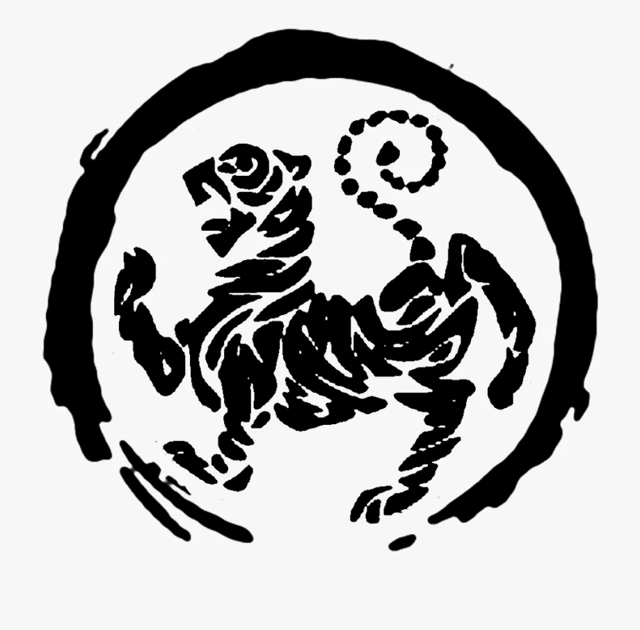
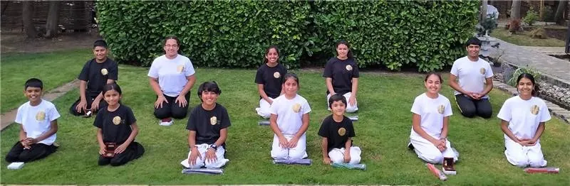

Shotokan Tigers: The Symbol of Strength and Resilience
Hoan Kusugi, a Japanese man, originally created the Shotokan Tigers as a tribute to Karate. He developed the symbol under the guidance of his friend and teacher, Gichin Funakoshi Hanshi. As a dedicated student, Kusugi aimed to capture the essence of Funakoshi’s teachings in one powerful symbol. He chose the tiger to represent Funakoshi’s art. He intended to include this symbol in the Master Text. This work would become the first book published on Karate.
Gichin Funakoshi Hanshi specifically selected the tiger as a symbol for the Shotokan Tigers system of Karate. This choice reflects qualities like strength, power, and tenacity. Moreover, Funakoshi’s decision carried deep significance and was not arbitrary. Each quality is essential to Karate practice. They embody the core values that students strive to cultivate throughout their training journey in Shotokan Tigers. The tiger symbolizes the fierce determination needed to master the art. It encourages practitioners to rise above challenges and maintain discipline.
The Origin of the Shotokan Tiger Symbol
The Shotokan Tigers is distinctive in its design, featuring lines that do not outline a complete body. Instead, these lines represent the comprehensive system of Shotokan. Each line signifies various facets of Karate that Funakoshi wanted his students to study diligently. As students progress through their training, they must understand these aspects. The symbolism is rich and conveys an important idea. Karate involves more than just physical strikes and kicks. It encompasses a wide array of techniques and philosophies that build the Shotokan Tigers.
Karate builds on a foundation of diverse techniques. These include stances, strikes, thrusts, kicks, joint locks, pressure points, blocks, takedowns, and controlling techniques. Each component is integral to the practice. Neglecting any area can compromise the effectiveness and integrity of the entire system. This holistic approach ensures that practitioners learn to defend themselves. It also fosters a deep understanding of the art and its underlying principles.

The Four Pillars of Shotokan
Overall, the Shotokan Tigers symbolize four main components crucial to mastering Karate. These are Kihon (basics), Kata (forms), Bunkai (self-defense), and Kumite (sparring).
- Kihon forms the foundation of Karate, teaching students the basic techniques and stances that are essential for all subsequent learning.
- Kata serves as a way to practice movements and strategies in a controlled manner. This allows students to internalize techniques and understand their application.
- Bunkai involves breaking down the Kata to understand its practical self-defense applications. This equips students with the skills needed to respond effectively in real-life situations.
- Kumite offers the opportunity for students to spar, applying their learned techniques in a dynamic and challenging environment.
These four components work in harmony, and the Shotokan Tiger symbolizes the unity of these practices.
Containing the Power of Karate
The outer circle of the Shotokan Tigers visually represents Funakoshi Hanshi’s vision for Karate. It emphasizes the importance of containing the power that comes with training. Karate empowers individuals to develop significant strength and skill, but practitioners must never use this power impulsively or recklessly. Instead, practitioners should unleash this power only when necessary. They should do so specifically to defend themselves or to protect those who cannot defend themselves from violent attacks.
As you train in Karate at any Dojo, remember the philosophy instilled by Gichin Funakoshi Hanshi. Too often, I have seen students abandon their training over the years. This frequently results from not engaging with the true spirit of Karate.. Training with the right mindset can make all the difference in a student’s journey.
Embracing the Spirit of the Shotokan Tiger
During challenging times, it is essential to remember the spirit of the art you practice. This spirit can provide strength and motivation to persevere, even when obstacles arise.
Below is a picture of our students who made it through the lockdown period.They embodied the spirit of the Shotokan Tigers. I feel immensely proud of each student for not giving up on their training. They maintained their integrity and resolve to succeed. Their commitment to Karate and the principles it represents showcases the resilience and strength symbolized by the Shotokan Tigers.